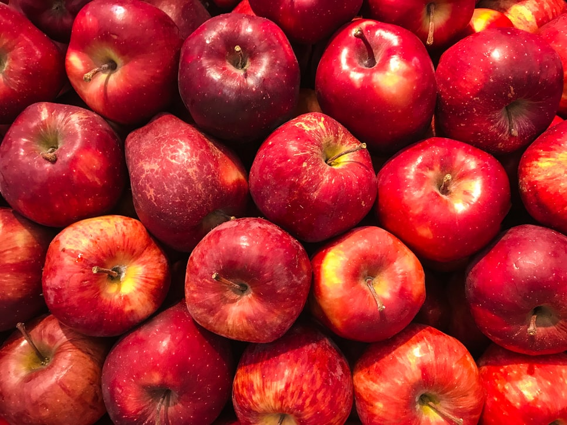
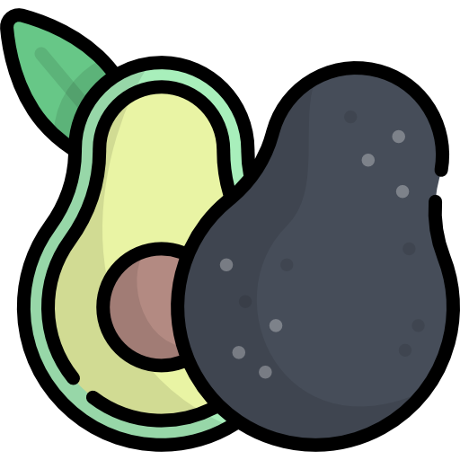
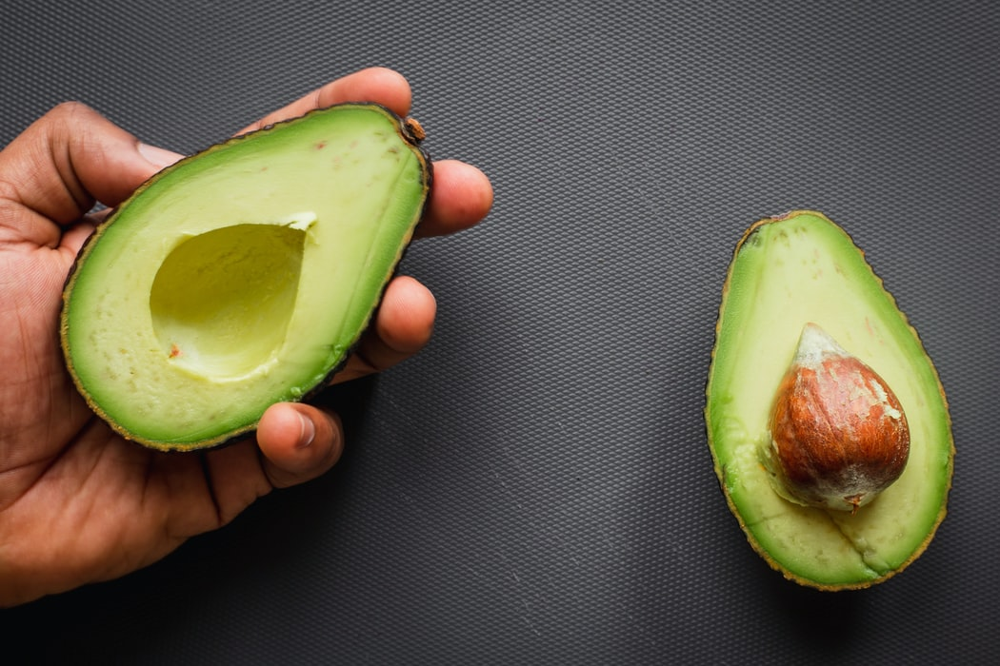
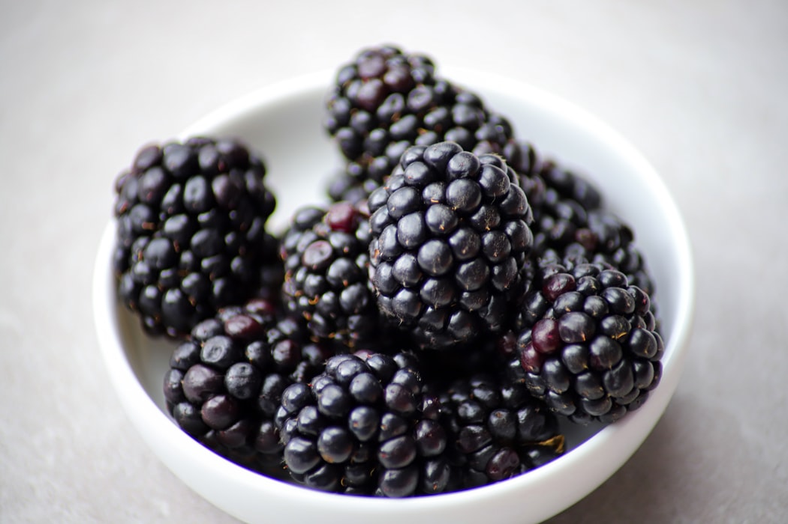
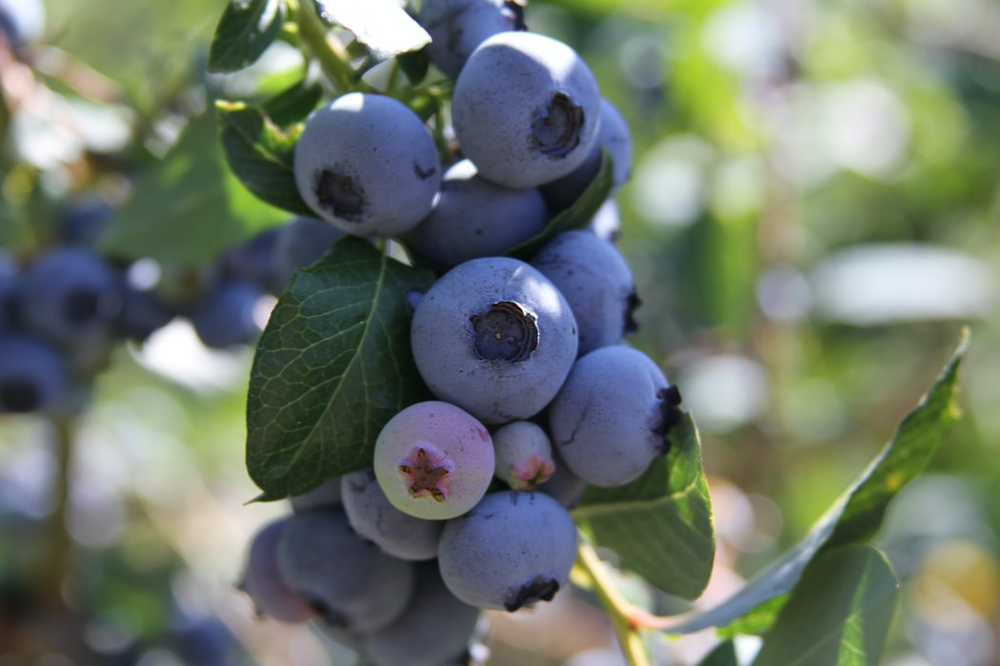

Fruits & thier nutritions
Apple 

Avocado 
- Vitamin
- Folate
- Vitamin C
- Potassium
- Vitamin B5
- Vitamin B6
- Vitamin E
- Small amounts of magnesium, manganese, copper, iron, zinc, phosphorous and vitamins A, B1 (thiamine), B2 (riboflavin) and B3 (niacin).
- Lower cholesterol and triglyceride levels
- Help keeping eyes healthy
- Prevent cancer
- Relieve symptoms of arthritis
- Help lose weight
- Sprinkled with salt or pepper
- Baked with egg or bacon
- Made them in salads
- Spreaded on toast
- Sushi rolls
- Made as an ice cream
*Remember to discard the skin and seed before eating the yellow flesh inside the avocado.
Blackberry
- Vitamin C
- Vitamin K
- Manganese
- Vitamin A
- Vitamin E
- Zinc
- Help fight against the adverse impact of free radicals in the body
- High in fiber
- Support bone health
- Help control blood sugar
- Help reduce brain inflammation
Blueberry
- Fiber
- Vitamin C
- Vitamin K
- Manganese
- Carbohydrates
- Protect body from free radicals
- Protect against aging and cancer
- Reduce a predominant risk factor for heart disease
- Lower blood pressure
- Main brain function and improve memory
- Anti-diabetes
- Prevent Urinary Tract Infections(UTIs)
- Reduce muscle damage